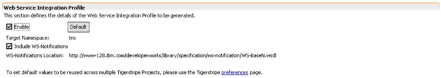

© copyright 2005, 2006, 2007 Cisco Systems, Inc. - All rights reserved
Before the Web Services Integration profile can be generated for a Tigerstripe Project, it must be enabled and configured for that project.
The configuration is handled through the Tigerstripe Descriptor of Tigerstripe project.
Make sure the Tigerstripe Perspective is active, navigate to the appropriate Tigerstripe Descpritor in the target Tigerstripe project, and double click on it to open it. Select the Generation tab. The Web Service Integration Profile Section looks like shown below:

When the Web Service Integration Profile is enabled for a Tigerstripe project, WSDL (Web Service Definition Language) files will be generated for each Session Facade Artifact present in the project.
Note: the generated WSDL file relies on imports of the XML schemas generated by the JMS/XML Profile. As a result, when using the Web Service Integration Profile, make sure the JMS/XML is enabled and properly configured as well.
The Web Service Integration Profile needs to be enabled before Tigerstripe generates the WSDL for a Tigerstripe Project.
In the view presented above:
- Select Enable: to enable the Web Service Integration profile for this Tigerstripe Project.
- Press Default: to set up the WSDL details to their default values. This button can be used at any moment to revert back to default values. For more details about these please refer to the section below.
These changes need to be committed by saving the Tigerstripe descriptor. (ctrl-s)
For every Session Facade artifact in the Project a WSDL file is created. Each of these files imports the XML schemas as generated by the JMS/XML profile and the WS-Notification specification. The following can be customized:
- Target Namespace: by default, the namespace for the generated WSDL is set to "tns". Any valid prefix can be set here.
- WS-Notification: by default, the OSS/J Web Service Integration Profile includes the WS-Notification specification in the generated WSDL. This can either be turned off, or force to include it from an alternate location:
- Include WS-Notification: un-check to prevent the generated WSDL to include references to the WS-Notification specification. Default value is set to include it.
- WS-Notification Location: the location to be used in the generated import clause when importing the WS-Notification specification. This location can be changed to an alternate valid location through this field.

© copyright 2005, 2006, 2007 Cisco Systems, Inc. - All rights reserved